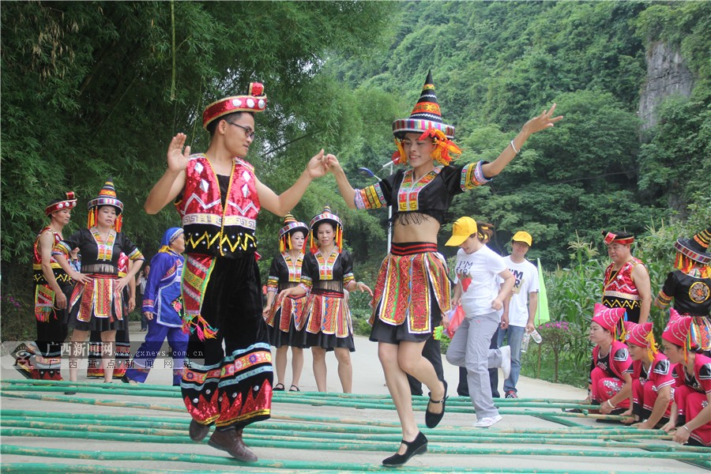

走进上林
-
 上林县，广西壮族自治区南宁市市辖县，位于广西壮族自治区中部，南宁市东北部，大明山东麓，东经108°23′至108°52′，北纬23°12′至23°28′，温热带气候。
上林县，广西壮族自治区南宁市市辖县，位于广西壮族自治区中部，南宁市东北部，大明山东麓，东经108°23′至108°52′，北纬23°12′至23°28′，温热带气候。
-
 上林县旅游资源丰富，被人们称为广西壮族自治区首府南宁市的"后花园"。主要景点有:云里湖、金莲湖、大龙湖、鼓鸣寨、大明山风景区、澄泰洋渡风景区、东红湿地、东春下水源、毛塘湿地、有岭南状元村之称的"不孤村"人文景观等
上林县旅游资源丰富，被人们称为广西壮族自治区首府南宁市的"后花园"。主要景点有:云里湖、金莲湖、大龙湖、鼓鸣寨、大明山风景区、澄泰洋渡风景区、东红湿地、东春下水源、毛塘湿地、有岭南状元村之称的"不孤村"人文景观等
-  上林县是一个以壮族为主的多民族聚居地， 作为大南宁经济圈的重要一员，上林县深化改革，实行全方位、多层次、宽领域的对外开放，努力把上林建设成为南宁市的"后花园"和绿色农副产品重要供应地。中国老年学会2012年12月28日正式向广西上林县授予"中国长寿之乡·广西上林"牌匾和证书。